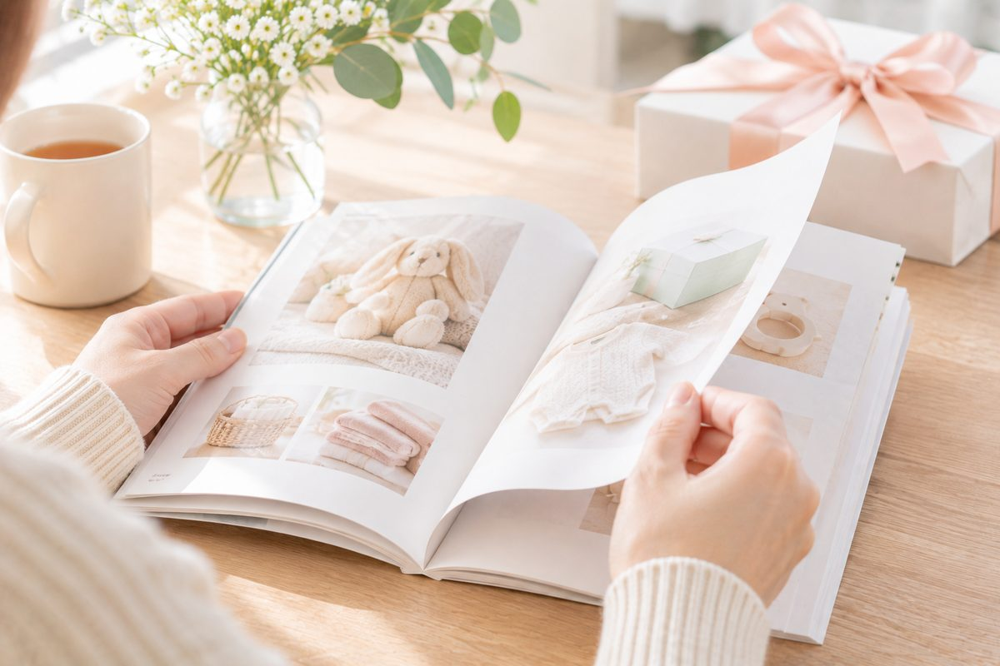
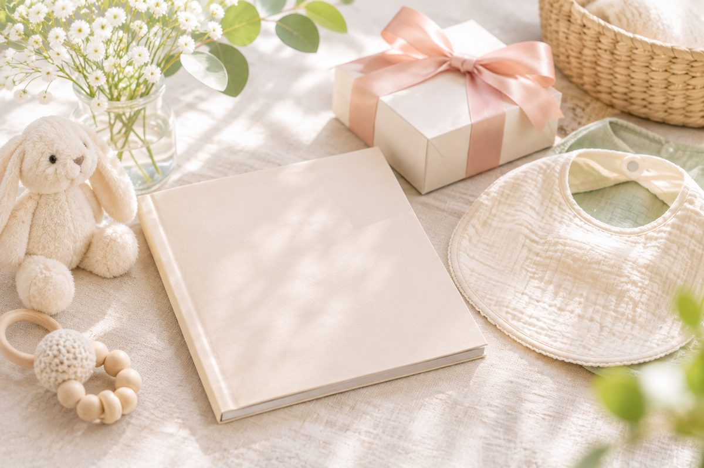

まず結論：2人目でも、金額の相場は1人目と同じ
二人目の出産祝いで金額に迷う理由は、「1人目で一度贈っているから、少し減らしてもいいのでは」という感覚です。結論から言うと、相場は1人目と同じが基本です。2人目特化メディアの整理でも、「相場は1人目と同じでOK。減らすとかえって気まずい」とされています。
変えるべきは額ではなく中身です。1人目と同じ額でも、2人目では品物の被りが起きやすいため、「選べる・消える」ものへ中身を寄せるのが当サイトの総合ランキング（「二人目の出産祝いは何が正解？」）の結論でした。この記事は、その前段にある「額の決め方」だけを扱います。
なお、この記事の金額は、ギフト各社が公開している金額相場表（ミキハウス、高島屋、ハーモニック、GIFTFUL、日本郵便など）に共通して現れるレンジを集約した一般的な目安です。地域や家庭の慣習で幅があります。1社の決めた金額としてではなく、「だいたいこの範囲なら外さない」という目安として使ってください。

関係性別の金額相場
| 関係性 | 金額相場の目安 | 備考 |
|---|---|---|
| 友人・知人 | 3,000〜10,000円 | 親しさで幅が大きい帯。中心は5,000円前後 |
| 同僚（個人） | 3,000〜5,000円 | 職場の慣習があればそれを優先 |
| 同僚（連名） | 総額で3,000〜5,000円を目安に集める | 1人あたりの額は人数で自然に決まる。部署の前例確認が先 |
| 上司・先輩（目上） | 5,000〜10,000円 | 現金は避ける（後述）。品物かカタログギフトで |
| きょうだい・親戚 | 10,000〜30,000円 | 身内は高めが標準。額の差が見える場面への配慮も必要（後述） |
相場表は「この範囲なら失礼にあたらない」という下限と上限の目安です。次に、額を決めるときに外してはいけない3つの論点を押さえます。
論点1：贈りすぎは、相手の「お返し負担」になる
金額は高ければよいわけではありません。出産内祝いは「半返し〜3分の1」が目安とされるため、贈る額が上がるほど、産後間もない相手のお返しの負担も上がります。子育てメディアの調査（HugKum）でも、「内容に関わらず、お返しが負担で困る」という声が5.3%ありました。
とくに2人目は、上の子の対応で1人目以上に時間がない時期です。相場の上限を超えて贈るより、相場の範囲内で収め、必要な場合は「お返しは気にしないで」と一言添えるほうが、受け取り側の負担は下がります。
論点2：現金は満足度が高い。ただし「額が見える」
現金は、受け取り側の調査では最も評価が高い選択肢です。冠婚葬祭ギフト大手の調査（リンベル）では、2人目以降でもらって嬉しかったものの1位（49.8%）でした。当サイトの総合ランキングでも現金は4位に入れ、「額より渡し方」が大事だと整理しています。
一方で、現金には金額がそのまま伝わるという性質があります。X上の受け取り体験では、身内間で額の差（1万円を包んだ人と10万円を包んだ人）が見えてしまい、気まずさが残ったという摩擦の実例が見られました。また、「使い道に迷って長く手つかずになった」という声もあります。
使い分けの目安は次のとおりです。
- 現金が向く場面：きょうだい・親戚など身内、「ベビー用品に使ってね」「上の子のものも買ってあげて」と使い道の一言を添えられる間柄
- 現金以外が向く場面：身内が集まり額が比べられやすい場面、使い道を指定しにくい間柄
論点3：目上への現金は避ける
上司・先輩・年上の親戚など、目上の相手への現金は、失礼にあたると受け取られる場合があります。これは出産祝いに限らない贈答の基本で、相場表でも目上の金額帯（5,000〜10,000円）は「品物で」という前提で示されることが多い帯です。
目上には、品物か、次に紹介するカタログギフトに回してください。金額の目安は相場表のとおり5,000〜10,000円で、現金のときより「品の良さ」が伝わる形を選ぶのが安全です。
額を「見せない」という選択肢：カタログギフトとギフトカード
相場の範囲内でも、「額がそのまま伝わること自体が気になる」という場合は、額が見えにくい形に変える方法があります。
カタログギフト

受け取り側が自分で選べるため、好み外しと重複を同時に避けられます。ギフトサービスの調査（GIFTFUL・ママ100人）では、もらって嬉しかったものの4位（24%）で、理由は「自分で選べる」「失敗がない」でした。コース価格は3,000〜10,000円台が一般的で、関係性別の相場の帯にそのまま当てはまります。目上への現金回避の受け皿としても定番です。
選ぶときは、ベビー用品が含まれる育児向けカタログか、有効期限が6か月以上のものを。投げやりに見える懸念には、メッセージを一言添えるのが定番の配慮です（当サイトの総合ランキング15位でも同じ整理をしています）。

ギフトカード・商品券
当サイトの総合ランキングで1位のカテゴリです。サイズ・好み・重複の全リスクを回避できます。ただし金額がそのまま伝わる点は現金と同じで、目上には「味気ない」と受け取られることがあるため、その場合は上記のカタログギフトへ。メッセージカードを添えるのが定番の配慮です。
（ギフトカード自体はアフィリエイト対象外のため、この節に商品リンクはありません。カードで買えるものの実例は、総合ランキング記事の絵本・消耗品の節をご覧ください。）
決めた予算で、何を贈るか（予算帯別の型）
額が決まったら、2人目では中身を「選べる・消える」側に寄せるのが原則です。詳細は各専門記事に譲り、ここでは型だけを示します。
| 予算帯 | 型 | 詳しい記事 |
|---|---|---|
| 3,000円台 | フリーズドライ詰め合わせ／おしりふき等の消耗品（銘柄が聞ける間柄ならおむつ） | 食事系ギフト記事／消耗品ガイド記事 |
| 5,000円前後 | 冷凍スープ等の食事系ギフトセット | 食事系ギフト記事 |
| 5,000〜10,000円 | カタログギフトの中位コース／ママ本人へのギフト | カタログギフトは上記の節／総合ランキング記事 |
| 10,000円以上 | 現金＋使い道の一言（身内）／上の子プチギフト（1,000〜3,000円）の同梱で調整 | 総合ランキング記事 |

ママの本音コメント
※以下の声は、本文で紹介した公開アンケート・X上の受け取り体験から、印象に残った言葉をそのまま抜き出したものです。特定の個人への取材ではありません。
受け取り側の声：お返しが負担になることも
「内容に関わらず、お返しが負担で困る」
（論点1の節より。HugKumの調査で5.3%あった声）
受け取り側の声：現金が手つかずになった
「使い道に迷って長く手つかずになった」
（論点2の節より。X上の受け取り体験から）
まとめ
- 2人目でも金額の相場は1人目と同じ。減らすとかえって気まずくなります。変えるのは額ではなく中身です。
- 関係性別の目安は、友人3,000〜10,000円、同僚3,000〜5,000円、目上5,000〜10,000円、きょうだい・親戚10,000〜30,000円（各社の金額相場表の共通レンジ）。
- 贈りすぎは相手のお返し負担になります。上限に寄せるより、相場内に収めることが配慮です。
- 現金は満足度が高い一方で額が見えます。身内で額が比べられる場面と、目上への現金は避け、カタログギフトや品物に切り替えてください。
この記事について
広告・PRについて
※この記事にはアフィリエイト広告（PR）が含まれます。記事内のリンクからご購入いただくと、当サイトに紹介料が支払われる場合があります。なお、金額相場や品目の並びは広告の有無ではなく、下記の調査根拠に基づいて決めています。
調査根拠・出典
金額相場は、ミキハウス、高島屋、ハーモニック、GIFTFUL、日本郵便等の公開している金額相場表に共通するレンジを集約した一般的な目安であり、地域・慣習により異なります。
調査データの出典：リンベル、HugKum、GIFTFUL各調査、およびX上の体験談集計（2026年11月）。受け取り体験は調査結果とSNS上の声をもとに構成しており、特定の個人の体験談として創作したものではありません。